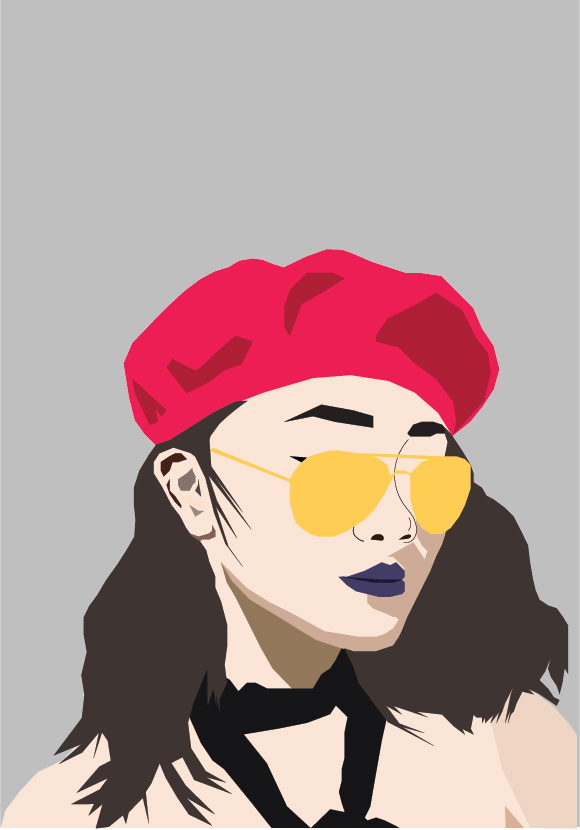

Resume
Click here for the PDF version!
Work Experience
Graphic Design Intern/They New York
Jun 2018—Sept 2018
- Created layouts for Instagram story highlights to align with brand aesthetics.
- Came up with campaign concepts for posters and photoshoots.
- Designed and mocked up new shoe designs.
- Created decks for brand partnerships.
Digital Marketing Fellowship/Yeohlee NY
Jan 2018—Nov 2018
- Creates mailers and graphics for upcoming announcements and events.
- Started new company Instagram account to sell and tag products.
- Assists with maintaining company website/online shop.
- Manages company social media platforms.
Human Resources Assistant/The New School
Aug 2016—Present
- Greets visitors and callers, handle their inquiries, and direct them to the appropriate person according to their needs.
- Operates office equipment such as fax machines, copiers, and phone systems, and use computers for word processing and other applications.
Venue Assistant NYFW/IMG
Feb 2018—Feb 2018, Sept 2018—Sept 2018
- Changeover Hair + Makeup stations backstage between shows.
- Configured benches for changeover between shows.
- Assisted Venue Managers with radio management.
- Ushered guests during shows.
Social Media Marketer & Product Development Assistant/Clutch Made LLC
Jun 2017—Jan 2018
- Managed social media platforms for the company and its clients.
- Sourced materials and created tech packs for upcoming productions.
- Created weekly mailers to promote company services.
- Took and edited photos/videos.
- Merchandised client's materials.
Sales Associate/Urban Outfitters
Jun 2017—Sept 2017
- Utilized product knowledge with strong interpersonal and communications skills for customer service.
- Maintained floor presentation.
Volunteer Experience
NYFW/The Impression, CFDA
Sept 2016—Sept 2016
- Distributed The Impression magazine at various fashion shows.
- Reported to the manager before and after each shift.
- Carried empty boxes back for recycling.